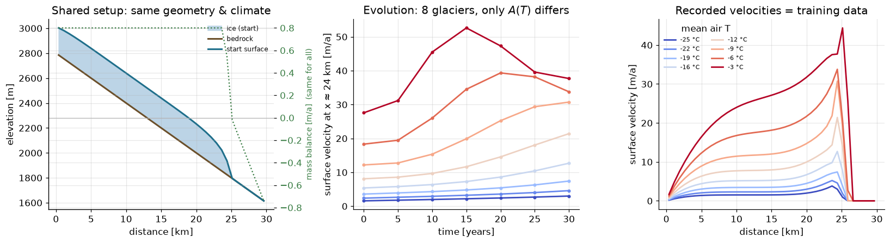
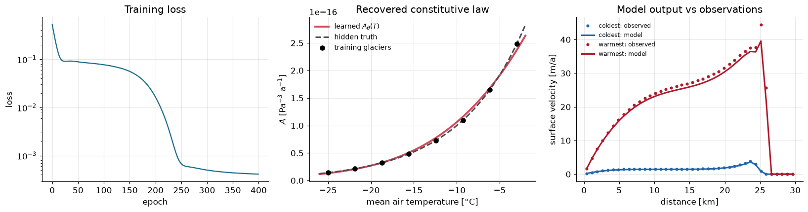

Learning uncertain ice-flow closures with differentiable programming
Main idea. Keep the physics you trust, use a flexible parameterization — here, a small neural network — for the closure you do not know well, and fit it by differentiating through the ice-flow solver.
Code
import jax, jax.numpy as jnp, numpy as npimport diffrax as dfx, equinox as eqx, optax, optimistix as optximport matplotlib.pyplot as pltimport timejax.config.update("jax_enable_x64", True) # ice flow is stiff -> use 64-bit floatsplt.rcParams.update({"figure.dpi": 110, "font.size": 11, "axes.grid": True,"grid.alpha": 0.3, "axes.spines.top": False, "axes.spines.right": False})print("jax", jax.__version__, "| diffrax", dfx.__version__, "|", jax.devices())
jax 0.10.2 | diffrax 0.7.2 | [CpuDevice(id=0)]
1 · Why universal differential equations?
Two ways to model a glacier, each with strengths and limitations:
Physics-based models
Built from conservation laws and interpretable assumptions.
Often extrapolate better when those assumptions are appropriate, but predictions can be limited by uncertain parameters and empirical closures.
Data-driven models
Flexible and able to learn patterns from observations.
Often data-hungry, and extrapolation depends strongly on the training distribution and the model’s inductive bias.
A Universal Differential Equation (UDE) combines these ideas: keep the trusted structure and replace only the uncertain closure with a learnable function \(\mathcal{U}_\theta\) (a small neural network):
We fit \(\theta\) so the solution matches observations. Because we infer a whole function, this is an example of functional inversion (Rackauckas et al., 2020; Bolibar et al., 2023).
Note1.1 The key idea
We keep the conservation laws (mass, momentum) and learn selected closures or parameterizations: for example, how ice deforms, how it slides, or how mass balance depends on climate.
The neural network is not the whole glacier model. It is a learnable component inside the model.
2 · Example UDE: SIA with learned \(A(T)\)
Suppose we trust the mass-conservation/SIA structure, but do not know how to specify the rate factor \(A\).
We expect \(A\) to depend on ice temperature and material state, but the relationship is uncertain.
with \(S = b + H\) (surface), \(b\) bedrock, and \(\dot b\) climatic mass balance.
The observable surface velocity comes from the same SIA physics: \(\,u_s = \tfrac{2A}{n+1}(\rho g)^n H^{\,n+1}\big|\partial_x S\big|^{\,n}.\)
The split between what we prescribe and what we learn is the UDE:
Prescribed structure
Learned closure
Mass conservation + SIA
Glen’s creep parameter \(A\): ice “softness”
Note2.1 Our target
\(A\) depends on temperature, water content, fabric, and other material properties (Cuffey & Paterson, 2010). In simple models it is often treated as a tuned constant or prescribed parameter. Here we learn a temperature-dependent version, \(A(T)\).
3 · ML reminders (the parts we lean on)
You already know these; two quick reminders, then the one new wrinkle:
A neural network is a flexible parametric function\(\mathcal{U}_\theta\) with trainable parameters \(\theta\). With enough capacity, it can approximate broad classes of continuous functions on bounded domains.
Training = minimizing a loss \(L(\theta)\) by gradient descent (\(\theta \leftarrow \theta - \eta\,\nabla_\theta L\); Adam is a more adaptive version).
The new wrinkle in a UDE: the quantity we differentiate is the output of an ODE / PDE solver.
4 · The UDE idea: training as differential-equation-constrained optimization
This is the conceptual heart of the lecture — the bridge from ordinary ML to physics.
Ordinary ML minimizes a loss directly over the network’s prediction:
\[\min_\theta\; L(\mathcal{U}_\theta).\]
A UDE minimizes a similar misfit, but the prediction is defined through the solution of a differential equation. The loss depends on the state \(u\), and \(u\) is constrained by the model equations:
That single “subject to” is the main structural difference. In computation, the PDE is discretized and the solver returns a numerical state satisfying the discrete equations to solver tolerance. The optimizer can change the closure, but it cannot freely choose a state that bypasses the model.
To take a gradient step we need \(\nabla_\theta L\), but \(L\) depends on \(\theta\)through the constrained solution\(u\). Differentiating through that constraint is the same adjoint/reverse-mode idea used in inverse modelling (MacAyeal, 1993). In differentiable programming, jax.grad can trace the numerical solve and compute the required vector-Jacobian products without us deriving them by hand.
Hard vs. soft constraints: the contrast with PINNs
You have likely already met PINNs, which represent the solution with a network and add the PDE residual to the loss as a penalty. In the language above, that is a penalty method: the physics is encouraged by the objective, so it acts as a soft constraint.
A UDE instead generates the state with an embedded solver. The resulting state satisfies the discretized equations, within the chosen model, discretization, and solver tolerance.
the unknown closure \(\mathcal{U}_\theta\) in the RHS
PDE enters via
a residual penalty \(\lambda\lVert\mathcal{R}[u_\phi]\rVert^2\)
an embedded equation solver
Physics satisfied
approximately, depending on optimization and penalty weight
by the numerical solver, to discretization and solver tolerance
Conservation laws
encouraged by the loss
built into the solver/discretization
SINDy (sparse discovery of terms) and Neural ODEs (learn the entire RHS) are the other neighbors; a UDE sits in between: keep the trusted operator, learn only the missing closure. The AD_and_adjoints_concepts companion makes the adjoint connection precise.
5 · Worked example: recovering Glen’s creep parameter \(A(T)\)
ImportantThe inverse problem
Suppose we trust the SIA model but do not know how the rate factor \(A\) varies with temperature. We can observe surface velocities. Can we learn \(A(T)\) from those velocities, through the ice-flow equation?
This is the headline experiment of Bolibar et al. (2023) in miniature, run as a synthetic twin experiment so we know the truth and can check the result. Because the same model family generates and fits the data, this isolates the closure-learning mechanism; real applications also include structural model error and additional identifiability challenges.
Invent a hidden law \(A_{\text{true}}(T)\) (warmer \(\Rightarrow\) softer ice).
Generate “observations”: glaciers at different temperatures, evolved a few decades; record surface velocities.
Hide \(A_{\text{true}}\). Replace \(A\) with a network \(A_\theta(T)\) and train it to match the velocities.
Compare recovered \(A_\theta(T)\) to the truth, which was used only for evaluation.
5.1 The known physics: the SIA flowline model
Code
# --- constants (SI units, time in YEARS) -----------------------------------RHO, G =900.0, 9.81# ice density [kg/m^3], gravity [m/s^2]N_GLEN =3.0# Glen exponent (assumed known)A_FLOOR, A_CEIL =1e-18, 4e-16# physical band for A [Pa^-3 a^-1]# --- finite-volume flowline: NX cells (control volumes) of width dx ---------L, NX =30_000.0, 40dx = L / NXx = (jnp.arange(NX) +0.5) * dx # cell-CENTER positions [m]bed =2800.0-0.04* x # bedrock at cell centers [m]ELA, BETA, CAP =1800.0, 0.004, 0.8# equilibrium-line altitude, MB gradient, max accumulationdef mass_balance(S):"Altitude-dependent surface mass balance [m ice / a]."return jnp.clip(BETA * (S - ELA), None, CAP)
Code
def sia_rhs(t, H, A):'''dH/dt for the SIA flowline. Known physics: dH/dt = b_dot + d/dx( D dS/dx ), D = (2A/(n+2))(rho g)^n H^(n+2) |dS/dx|^(n-1). Fluxes are evaluated on cell faces; `A` is the creep parameter we later replace with a network.''' A = jnp.clip(A, A_FLOOR, A_CEIL) H = jnp.clip(H, 0.0) S = bed + H # surface elevation at cell centers dSdx = (S[1:] - S[:-1]) / dx # surface slope on faces H_face =0.5* (H[1:] + H[:-1]) # thickness on faces Gamma =2.0* A / (N_GLEN +2.0) * (RHO * G) ** N_GLEN D = Gamma * H_face ** (N_GLEN +2.0) * jnp.abs(dSdx) ** (N_GLEN -1.0) q_int =-D * dSdx # ice flux through faces q = jnp.concatenate([jnp.zeros(1), q_int, jnp.zeros(1)]) # no flux at divide & terminus div =-(q[1:] - q[:-1]) / dx# can't melt absent ice: a SMOOTH limiter (differentiable at the moving front) limiter = jnp.clip(H /10.0, 0.0, 1.0) bdot = mass_balance(S)return jnp.maximum(bdot, 0.0) + jnp.minimum(bdot, 0.0) * limiter + div
NoteSolver choice
Ice flow is stiff diffusion (\(D \propto H^{n+2}\)), so we integrate with a simple implicit (backward-Euler) scheme, which remains stable at relatively large time steps in this example. Each step solves a small nonlinear system (the root_finder).
Code
# Implicit backward-Euler solver. Fixed step; each step solves a nonlinear system.SOLVER = dfx.ImplicitEuler(root_finder=optx.Newton(rtol=1e-5, atol=1e-4, norm=optx.max_norm))DT_YEARS =0.5def solve_sia(A, H0, t1):"Integrate the SIA forward to time t1 [years]; return final thickness." n =int(round(t1 / DT_YEARS)) sol = dfx.diffeqsolve( dfx.ODETerm(sia_rhs), SOLVER, t0=0.0, t1=t1, dt0=DT_YEARS, y0=H0, args=A, stepsize_controller=dfx.ConstantStepSize(), max_steps=n +5, saveat=dfx.SaveAt(t1=True), adjoint=dfx.RecursiveCheckpointAdjoint(), # checkpointed adjoint: lets jax.grad see through )return sol.ys[-1]def surface_velocity(H, A):"SIA surface speed at cell centers [m/a] -- our observable." A = jnp.clip(A, A_FLOOR, A_CEIL); H = jnp.clip(H, 0.0); S = bed + H dSdx = (S[1:] - S[:-1]) / dx; H_face =0.5* (H[1:] + H[:-1]) u_face = (2.0* A / (N_GLEN +1.0)) * (RHO * G) ** N_GLEN \* H_face ** (N_GLEN +1.0) * jnp.abs(dSdx) ** N_GLEN # speed on interior faces u = jnp.concatenate([jnp.zeros(1), u_face, jnp.zeros(1)]) # no-flux faces -> 0return0.5* (u[1:] + u[:-1]) # average faces to cell centers
5.2 The hidden truth and the synthetic observations
A controlled recipe, so it is clear exactly what generates the data:
Spin up one shared glacier: evolve from bare bedrock to a quasi-steady starting geometry \(H_{\text{init}}\), used by all eight.
Pick eight temperatures (\(-25\) to \(-3\) °C) and give each its hidden softness \(A_{\text{true}}(T)\), the only thing that differs between glaciers.
Evolve each for T_OBS = 30 years under the identical climate (the same altitude–mass-balance law). Softer (warmer) ice deforms faster.
Record surface velocities\(U_{\text{obs}}\): these are the training targets.
The training data are velocities only. The hidden \(A_{\text{true}}(T)\) is not given to the optimizer; it is kept aside for the final check.
Code
T_glaciers = jnp.linspace(-25.0, -3.0, 8) # eight synthetic glaciersdef A_true(T):"HIDDEN ground-truth creep law: warmer ice -> larger A. [Pa^-3 a^-1]"return1.0e-16* jnp.exp(0.13* (T +10.0))A_REF =float(A_true(-14.0)) # reference A, used only to spin up geometryT_SPIN =300.0# years to build a quasi-steady startT_OBS =30.0# observed transient length [years]H_init = solve_sia(A_REF, jnp.zeros(NX), T_SPIN) # common starting geometryA_vals = A_true(T_glaciers)H_obs = jax.vmap(lambda A: solve_sia(A, H_init, T_OBS))(A_vals)U_obs = jax.vmap(surface_velocity)(H_obs, A_vals) # the "observations"print(f"starting geometry: max thickness {float(H_init.max()):.0f} m")print("observed peak velocity per glacier [m/a]:", np.round(np.array(U_obs.max(axis=1)), 1))
starting geometry: max thickness 240 m
observed peak velocity per glacier [m/a]: [ 3.8 5.2 7.4 12.7 21.4 30.7 33.8 44.4]
Code
# Time-resolved evolution for the figure (display only -- no gradients needed here).K, t_save =7, jnp.linspace(0.0, T_OBS, 7)def evolve_traj(A): sol = dfx.diffeqsolve(dfx.ODETerm(sia_rhs), SOLVER, t0=0.0, t1=T_OBS, dt0=DT_YEARS, y0=H_init, args=A, stepsize_controller=dfx.ConstantStepSize(), max_steps=int(T_OBS / DT_YEARS) +5, saveat=dfx.SaveAt(ts=t_save))return sol.ys # (K, NX)H_traj = jax.vmap(evolve_traj)(A_vals) # (8, K, NX)U_traj = jax.vmap(lambda Ht, A: jax.vmap(lambda H: surface_velocity(H, A))(Ht))(H_traj, A_vals)ref =int(np.argmax(np.array(U_obs).mean(axis=0))) # a representative fast pointuref = np.array(U_traj[:, :, ref]) # (8, K) speed there over timecolors = plt.cm.coolwarm(np.linspace(0, 1, len(T_glaciers)))fig, ax = plt.subplots(1, 3, figsize=(15, 4.2))# (a) The SHARED setup: one geometry and one climate, identical for every glacier.ax[0].fill_between(x/1000, bed, bed + np.array(H_init), color="#bcd4e6", label="ice (start)")ax[0].plot(x/1000, bed, color="#6b4f2a", lw=2, label="bedrock")ax[0].plot(x/1000, bed + np.array(H_init), color="#1f6f8b", lw=2, label="start surface")ax[0].set(xlabel="distance [km]", ylabel="elevation [m]", title="Shared setup: same geometry & climate")ax[0].legend(frameon=False, fontsize=8, loc="upper right")axb = ax[0].twinx() # the one mass-balance lawaxb.plot(x/1000, np.array(mass_balance(bed + np.array(H_init))), color="#3a7d44", lw=1.5, ls=":")axb.axhline(0.0, color="0.7", lw=0.8)axb.set_ylabel("mass balance [m/a] (same for all)", color="#3a7d44", fontsize=9)axb.tick_params(axis="y", labelcolor="#3a7d44")# (b) EVOLUTION over the 30-year transient -- the only difference between curves is A(T).for i inrange(len(T_glaciers)): ax[1].plot(np.array(t_save), uref[i], color=colors[i], lw=1.8, marker="o", ms=3)ax[1].set(xlabel="time [years]", ylabel=f"surface velocity at x \u2248{float(x[ref])/1000:.0f} km [m/a]", title="Evolution: 8 glaciers, only $A(T)$ differs")# (c) The OBSERVATIONS: final velocity profiles we train on.for i, T inenumerate(np.array(T_glaciers)): ax[2].plot(x/1000, np.array(U_obs[i]), color=colors[i], lw=1.8, label=f"{T:.0f} °C")ax[2].set(xlabel="distance [km]", ylabel="surface velocity [m/a]", title="Recorded velocities = training data")ax[2].legend(frameon=False, fontsize=7, title="mean air T", ncol=2)plt.tight_layout(); plt.show()

Warmer glaciers flow faster for the same geometry in this synthetic setup: softer ice. That spread is the signal we invert.
5.3 The learnable closure: a neural network \(A_\theta(T)\)
NoteThree useful modeling choices for the network
Normalize the input: feed \((T+14)/11\) so it is \(O(1)\).
Learn a deviation from a physics baseline: output \(A_\theta(T)=A_\mathrm{ref}\,e^{\,\mathrm{net}(T)}\), i.e. learn \(\log A\) relative to a reference. This is scale-aware because \(A\) spans orders of magnitude, and it keeps \(A\) positive by construction.
Make initialization well behaved: with the normalized input and the log-deviation form, the untrained network starts nearly flat and near \(A_\mathrm{ref}\).
Code
class CreepNet(eqx.Module):"Neural network for the creep parameter: T -> A_theta(T)." mlp: eqx.nn.MLPdef__init__(self, key):# small on purpose: the PDE supplies strong structure, so few parameters are neededself.mlp = eqx.nn.MLP(in_size=1, out_size=1, width_size=10, depth=2, activation=jax.nn.softplus, key=key)def__call__(self, T): z = jnp.atleast_1d((T +14.0) /11.0) # normalize input to ~O(1)return A_REF * jnp.exp(jnp.clip(self.mlp(z)[0], -5.0, 5.0)) # learn log-deviation from A_REFmodel0 = CreepNet(jax.random.PRNGKey(0))n_par =sum(p.size for p in jax.tree_util.tree_leaves(eqx.filter(model0, eqx.is_array)))print(f"untrained A_theta(-10 C) = {float(model0(-10.0)):.2e} | {n_par} trainable parameters")
untrained A_theta(-10 C) = 6.57e-17 | 141 trainable parameters
5.4 The loss: gradients through the solver
This is the constrained objective from §4 made concrete: the loss runs the same SIA solver with \(A_\theta(T)\) and compares predicted to observed velocities. eqx.filter_value_and_grad differentiates the loss through diffeqsolve. With the checkpointed Diffrax adjoint used in solve_sia, this computes the required reverse-mode sensitivities through the discretized solver.
epoch 0 loss = 5.203e-01
epoch 50 loss = 8.854e-02
epoch 100 loss = 7.703e-02
epoch 150 loss = 5.605e-02
epoch 200 loss = 1.639e-02
epoch 250 loss = 6.780e-04
epoch 300 loss = 4.998e-04
epoch 350 loss = 4.384e-04
epoch 399 loss = 4.119e-04
trained in 45.2 s
5.6 Did we recover the hidden closure?
Plot learned \(A_\theta(T)\) against the truth withheld from training, the analogue of Figure 3 in Bolibar et al.
Code
A_learned = jax.vmap(model)(T_glaciers)rel_err = np.abs(np.array((A_learned - A_vals) / A_vals))T_dense = jnp.linspace(-26.0, -2.0, 100)# Model output after training: predicted velocities (what we compare to observations)H_pred = jax.vmap(lambda A: solve_sia(A, H_init, T_OBS))(A_learned)U_pred = jax.vmap(surface_velocity)(H_pred, A_learned)fig, ax = plt.subplots(1, 3, figsize=(15, 4.2))# (a) training lossax[0].semilogy(history, color="#1f6f8b")ax[0].set(xlabel="epoch", ylabel="loss", title="Training loss")# (b) recovered constitutive law vs the hidden truthax[1].plot(np.array(T_dense), np.array(jax.vmap(model)(T_dense)), color="#d1495b", lw=2.5, label=r"learned $A_\theta(T)$")ax[1].plot(np.array(T_dense), np.array(A_true(T_dense)), "--", color="0.3", lw=2, label="hidden truth")ax[1].scatter(np.array(T_glaciers), np.array(A_vals), color="k", zorder=5, s=35, label="training glaciers")ax[1].set(xlabel="mean air temperature [°C]", ylabel=r"$A$[Pa$^{-3}$ a$^{-1}$]", title="Recovered constitutive law")ax[1].legend(frameon=False, fontsize=9)# (c) model output vs observations (the actual fit) for coldest & warmest glacierfor idx, name, c in [(0, "coldest", "#2166ac"), (len(T_glaciers) -1, "warmest", "#b2182b")]: ax[2].plot(x/1000, np.array(U_obs[idx]), "o", ms=3, color=c, label=f"{name}: observed") ax[2].plot(x/1000, np.array(U_pred[idx]), "-", color=c, lw=2, label=f"{name}: model")ax[2].set(xlabel="distance [km]", ylabel="surface velocity [m/a]", title="Model output vs observations")ax[2].legend(frameon=False, fontsize=8)plt.tight_layout(); plt.show()print(f"recovery error in A(T): mean {rel_err.mean():.1%} max {rel_err.max():.1%}")

recovery error in A(T): mean 4.1% max 6.5%
In this synthetic twin experiment, the network was not shown the hidden \(A(T)\) law, but it recovered the temperature dependence to a few percent by matching velocities through the solver. That success reflects several sources of structure: the SIA model, the positivity-preserving parameterization, and the limited range of the closure.
Relative to a black-box fit, this gives us:
Interpretable closure: \(A_\theta(T)\) is a curve we can inspect and compare to lab or field knowledge.
Physics-constrained predictions: predicted velocities are generated by a mass-conserving SIA solver, within the chosen discretization and tolerances.
Data efficiency in this example: a handful of synthetic glaciers sufficed because the observations were informative about the closure.
5.7 Bonus: robustness to noise
NoteInductive bias from the embedded PDE
The embedded PDE acts as a strong inductive bias, which can reduce overfitting even without an explicit regularization penalty. Add 15% noise and retrain:
recovery error WITH 15% noise: mean 5.4% max 10.6%
6 · From the toy to the real thing: Bolibar et al. (2023)
“Universal differential equations for glacier ice flow modelling”, Geosci. Model Dev. 16, 6671–6687, doi:10.5194/gmd-16-6671-2023. Same broad idea, scaled to real glaciers:
Key findings: - Recovered the prescribed noisy \(A(T_s)\) relationship across glaciers with limited overfitting and without an explicit regularization term; the embedded PDE supplied useful implicit regularization. - Showed robustness in experiments with deliberately perturbed mass-balance forcing, partly because the velocity signal was less sensitive to that error than thickness change.
Where it is going: learnable basal sliding, learnable mass-balance laws, seasonal velocity data to separate creep from sliding, and full-Stokes emulators.
7 · Pitfalls & frontier
A few things to keep in mind, and where the field is heading:
Identifiability: the observations must be sensitive to the closure being learned. In real glaciers, creep, sliding, thickness, bed geometry, mass balance, and temperature can compensate for one another.
Model error: a synthetic twin removes structural error by construction; field applications have imperfect geometry, forcing, physics, and observations.
Local minima: the loss is non-convex; restarts and learning-rate schedules matter.
Extrapolation: \(A_\theta(T)\) is most trustworthy over the temperature range represented in training; bounds and physically meaningful output transformations help.
Uncertainty: quantifying uncertainty in the learned function (Bayesian/ensemble) remains an active area.
Discretization and solver choices: the learned closure is tied to the numerical model used to train it, so resolution, tolerances, and solver design matter.
8 · References
Core paper
Bolibar, J., Sapienza, F., Maussion, F., Lguensat, R., Wouters, B., & Pérez, F. (2023). Universal differential equations for glacier ice flow modelling. GMD 16, 6671–6687. https://doi.org/10.5194/gmd-16-6671-2023 · ODINN.jl: https://github.com/ODINN-SciML/ODINN.jl
UDEs & scientific ML
Rackauckas et al. (2020), Universal Differential Equations for SciML, arXiv:2001.04385 · Chen et al. (2018), Neural ODEs, NeurIPS ·
Brunton et al. (2016), SINDy, PNAS 113(15) · Raissi et al. (2019), Physics-informed neural networks, JCP 378 · Sapienza et al. (2024), Differentiable programming for differential equations: a review, arXiv:2406.09699.